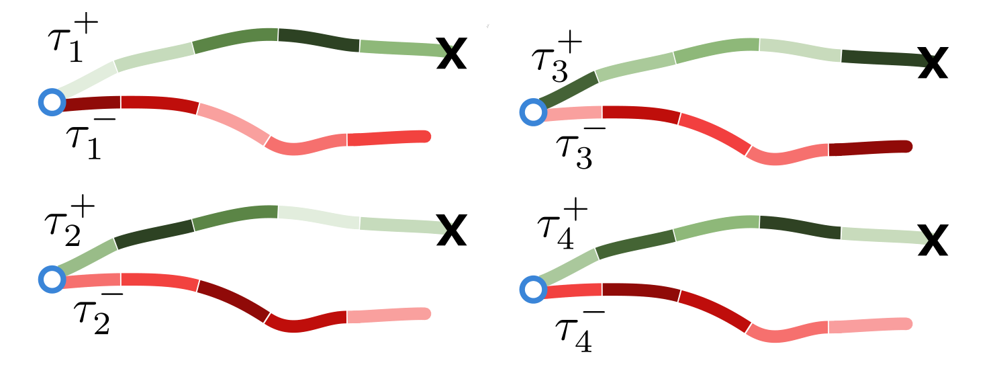
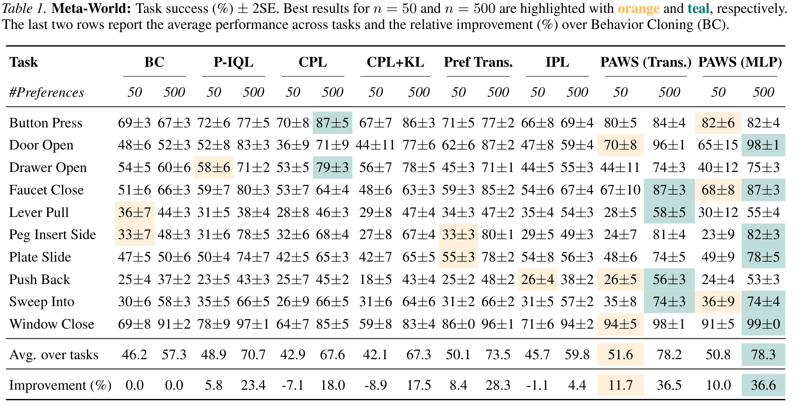
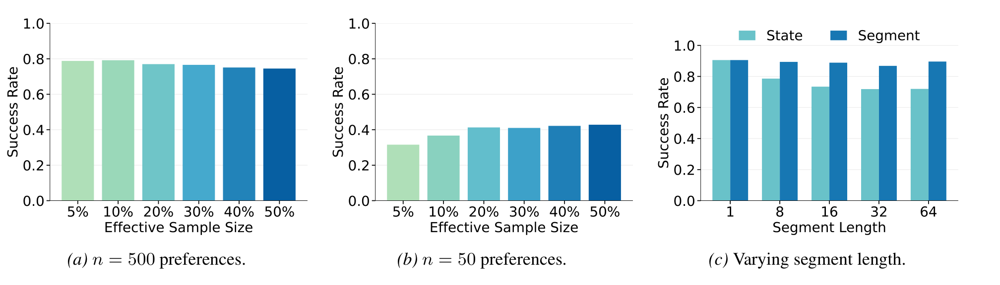

Abstract
Preference-based reinforcement learning (PbRL) learns policies from human trajectory-level comparisons, avoiding explicit reward design and expert demonstrations. Existing methods typically train utility functions on trajectory or segment-level preferences while relying on per-step utility estimates during policy optimization. This training and inference mismatch induces a distribution shift that severely degrades temporal credit assignment and limits policy learning. We analyze this issue and propose Preference Learning with Advantage-Weighted Segments (PAWS), a segment-based preference learning method that performs policy updates directly using segment-level advantage functions. By aligning utility training with policy optimization, PAWS preserves trajectory-level preference information and avoids unreliable per-step learning signals. Experiments on simulated robotic manipulation and locomotion tasks demonstrate that PAWS consistently outperforms existing PbRL approaches, highlighting the importance of distribution-consistent preference learning.
The Training–Inference Mismatch
Most PbRL methods train a reward or advantage model on segment-level comparisons, but then query that model at the level of individual state–action pairs during policy optimization. Because the preference loss only constrains the sum of per-step advantages within a segment, many distinct per-step assignments explain the same preference label. This leaves temporal credit assignment fundamentally ambiguous and injects distribution shift into policy learning.

Our Approach: PAWS
PAWS keeps training and inference distribution-consistent by using the learned advantage function directly on trajectory segments during policy optimization:
- Advantage learning. An advantage function Aφ is trained on segment-level preferences via a Bradley–Terry objective over the difference in cumulative segment advantages. Both an MLP and an encoder-only Transformer parameterization are supported.
- Segment-level policy update. A trust-region-constrained optimization in segment space yields a reweighted segment distribution p*(τ) ∝ pD(τ) exp(Aφ(τ)/λ). Projecting it back onto the policy gives a weighted maximum-likelihood update where every step in a segment shares the segment's advantage weight — never a per-step utility estimate.
- Data-driven step size. Instead of hand-tuning the KL trust region ε, PAWS sets it automatically from a target effective sample size neff — an intuitive knob describing how many preferences meaningfully contribute to each policy update.
Contributions
- We analyze temporal credit assignment in PbRL through the lens of a training–inference distribution shift, identifying it as a core limitation of existing methods.
- We propose PAWS, a segment-based preference learning method that aligns utility training with policy optimization, enabling reliable propagation of preference signals.
- We introduce an intuitive, data-driven strategy for setting policy-optimization hyperparameters based on the effective sample size of preference-weighted data.
- We validate PAWS on diverse simulated manipulation and locomotion tasks, with both oracle and real-human preferences, showing consistent gains over established baselines.
Results
Across 10 Meta-World manipulation tasks and 4 D4RL locomotion tasks, PAWS consistently outperforms PbRL baselines (BC, P-IQL, CPL, CPL+KL, Preference Transformer, IPL) under both low- (50) and high- (500) preference budgets. The gains are most pronounced in the low-data regime, where per-step utility estimates are noisiest.


BibTeX
@inproceedings{taranovic2026paws,
title={{PAWS}: Preference Learning with Advantage-Weighted Segments},
author={Aleksandar Taranovic and Onur Celik and Niklas Freymuth and Ge Li and Serge Thilges and Huy Le and Tai Hoang and Rania Rayyes and Gerhard Neumann},
booktitle={Forty-third International Conference on Machine Learning},
year={2026},
url={https://openreview.net/forum?id=IPeIlnJzYa}
}